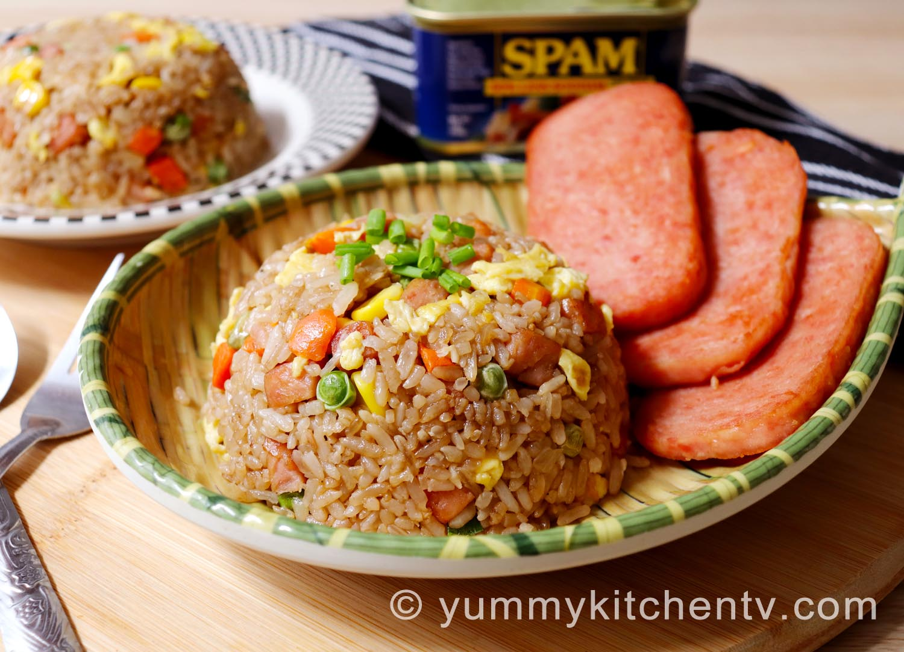

Whopper

Description
Mmmh.. spam fried rice.. one of the easiesr and most delicious
dishes you can make at home for yourself and your family. This is the
perfect dish to use left over rice for a quick and simple dinner that the
kids will love!
You can substitute spam for any other meat like ground beef, chicken,
shrimp, or (my favorite) chinese sausage. There are no amounts to any
of the ingredients here because people eat different amounts, and it's up
to you to decide how much ingredients you would like to have.
Ingredients
- Rice
- Eggs
- Mixed vegetables
- Spam
- Vegetable Oil
- Soy Sauce
- Salt and Pepper
- Garlic
Steps
- Heat wok (or pan) on high heat with large drizzle of oil. Take leftover rice (preferably leftover, but if not you can make some fresh Rice and when you're ready, come back to step 1)
and cook, stirring constantly until soft and mixed with oil. Set aside.
- Slice (or dice) spam and add to cooking vessel. Cook for a bit. Add defrosted mixed veggies and cook with spam for another minute or two.
- Add eggs to mix and stir until eggs are cooked and scrambled with other ingredients.
- Chop some garlic and add to mix. Add rice back into wok. Stir.
- Add a couple dashes of soy sauce, some salt and pepper too.
- Plate and enjoy!